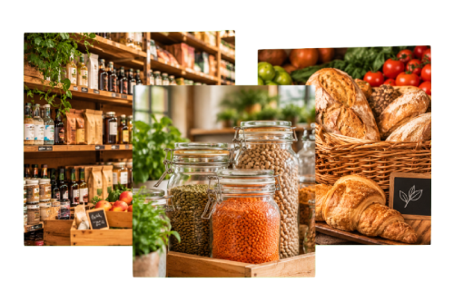
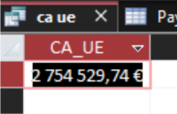
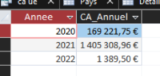
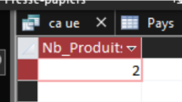
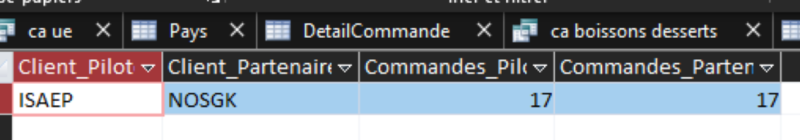

Rapport base de données Kdou
Découvrez notre rapport d'analyse de la base de données Kdou. Nous avons étudié les données afin de mettre en évidence différentes informations sur l'activité de l'entreprise.
↓ Découvrir le rapport
Découvrez notre rapport d'analyse de la base de données Kdou. Nous avons étudié les données afin de mettre en évidence différentes informations sur l'activité de l'entreprise.
↓ Découvrir le rapportDécouvrez KDou et les objectifs de notre travail.
KDou est une entreprise spécialisée dans la vente de produits alimentaires provenant de différents pays. Elle travaille avec plusieurs fournisseurs, jusqu'à l'international.
Proposer une grande variété de produits alimentaires tout en assurant la gestion des clients, fournisseurs et commandes. Par ailleurs, KDou aimerait renforcer son image d'entreprise éco-responsable tout en améliorant sa rentabilité.
Explorer et analyser la base de données KDou à l'aide du langage SQL et en extraire des informations utiles.
Réaliser des requêtes SQL et des indicateurs pour analyser l'activité de l'entreprise et pouvoir l'aider tout en présentant nos résultats.
SELECT Sum(DetailCommande.Quantité * Produit.CoutAchat * Categorie.CoefMarge * (1 - DetailCommande.Remise)) AS CA_UE
FROM (Pays INNER JOIN (Fournisseur INNER JOIN (Categorie INNER JOIN Produit ON Categorie.CodeCateg = Produit.CodeCateg) ON Fournisseur.NoFour = Produit.NoFour) ON Pays.NoPays = Fournisseur.NoPays) INNER JOIN DetailCommande ON Produit.RefProd = DetailCommande.RefProd
WHERE Pays.UE) = "Membre";

SELECT Year(Commande.DateCde) AS Annee, Sum(DetailCommande.Quantité * Produit.CoutAchat * Categorie.CoefMarge * (1 - DetailCommande.Remise)) AS CA_Annuel
FROM (Categorie INNER JOIN Produit ON Categorie.CodeCateg = Produit.CodeCateg) INNER JOIN (Commande INNER JOIN DetailCommande ON Commande.NoCommande = DetailCommande.NoCommande) ON Produit.RefProd = DetailCommande.RefProd
WHERE Categorie.NomCateg IN "Desserts", "Boissons"
GROUP BY Year(Commande.DateCde)
ORDER BY Year(Commande.DateCde);

SELECT Count(Produit.RefProd) AS Nb_Produits_Non_Commandes
FROM Produit INNER JOIN Categorie ON Produit.CodeCateg = Categorie.CodeCateg
WHERE Categorie.NomCateg = "Viandes" AND Produit.RefProd NOT IN (
SELECT DetailCommande.RefProd
FROM DetailCommande);

SELECT Commande.CodeCli, Count(Commande.NoCommande) AS NbCommandes
FROM Commande
GROUP BY Commande.CodeCli;
SELECT Pilote.CodeCli AS Client_Pilote, Pilote.CodeCliPart AS Client_Partenaire, C1.NbCommandes AS Commandes_Pilote, C2.NbCommandes AS Commandes_Partenaire
FROM(Clientele AS Pilote INNER JOIN Q_CommandesClients AS C1 ON Pilote.CodeCli = C1.CodeCli) INNER JOIN Q_CommandesClients AS C2 ON Pilote.CodeCliPart = C2.CodeCli
WHERE C1.NbCommandes = C2.NbCommandes;
